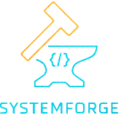

Profissional focado no desenvolvimento backend, com trajetória marcada pela disciplina, estratégia e paixão por resultados..
Venho de uma sólida experiência como Personal Trainer, onde atuei por mais de 5 anos ajudando pessoas a atingirem seus objetivos com foco, planejamento e resiliência.
Hoje, aplico essas mesmas habilidades na área de tecnologia, desenvolvendo soluções escaláveis e de alta qualidade.
Estou em transição para o desenvolvimento backend, com foco em Python, Go (Golang) e Java; tecnologias que estudo de forma estruturada para construir APIs performáticas, sistemas robustos e sustentáveis.
Minha missão é atuar em times de alta performance, contribuindo com código limpo, boas práticas de arquitetura e mentalidade de melhoria contínua.
Fora do mundo da programação, sou fã de ficção científica, novels, mangás, videogames (RPGs e competitivos) e boas histórias em séries e animes. Também amo passear com minha esposa e nossos dois cachorros, Lucky e Canela — momentos que me lembram que equilíbrio também faz parte do sucesso.
Sempre em evolução, pronto para novos desafios e oportunidades que me ajudem a crescer e impactar positivamente através da tecnologia.
Confira meus projetos abaixo e sinta-se à vontade para entrar em contato!


Este projeto simula um sistema bancário funcional em Python, permitindo a criação de contas, realização de depósitos, saques com limite diário e visualização de extrato. Desenvolvido com foco no aprendizado de lógica, organização de funções e boas práticas de programação.
Stack:Python
Descrição do projeto 2 Projeto em Andamento: [Nome do Projeto Java] Este projeto está atualmente em fase de desenvolvimento, representando um mergulho aprofundado em arquiteturas empresariais com Java e no ecossistema Spring Boot. Estou explorando a construção de APIs robustas, escaláveis e seguras, com foco em performance e manutenibilidade.
Stack:

Descrição do projeto 3 Este projeto está atualmente em fase de desenvolvimento, representando um mergulho aprofundado em arquiteturas empresariais com Java e no ecossistema Spring Boot. Estou explorando a construção de APIs robustas, escaláveis e seguras, com foco em performance e manutenibilidade.
Stack:HTML, CSS, JavaScript
Descrição do projeto 4 Este projeto está atualmente em fase de desenvolvimento, representando um mergulho aprofundado em arquiteturas empresariais com Java e no ecossistema Spring Boot. Estou explorando a construção de APIs robustas, escaláveis e seguras, com foco em performance e manutenibilidade.
Stack:HTML, CSS, JavaScript
Descrição do projeto 5 Este projeto está atualmente em fase de desenvolvimento, representando um mergulho aprofundado em arquiteturas empresariais com Java e no ecossistema Spring Boot. Estou explorando a construção de APIs robustas, escaláveis e seguras, com foco em performance e manutenibilidade.
Stack:HTML, CSS, JavaScript
Descrição do projeto 6 Este projeto está atualmente em fase de desenvolvimento, representando um mergulho aprofundado em arquiteturas empresariais com Java e no ecossistema Spring Boot. Estou explorando a construção de APIs robustas, escaláveis e seguras, com foco em performance e manutenibilidade.
Stack:HTML, CSS, JavaScript